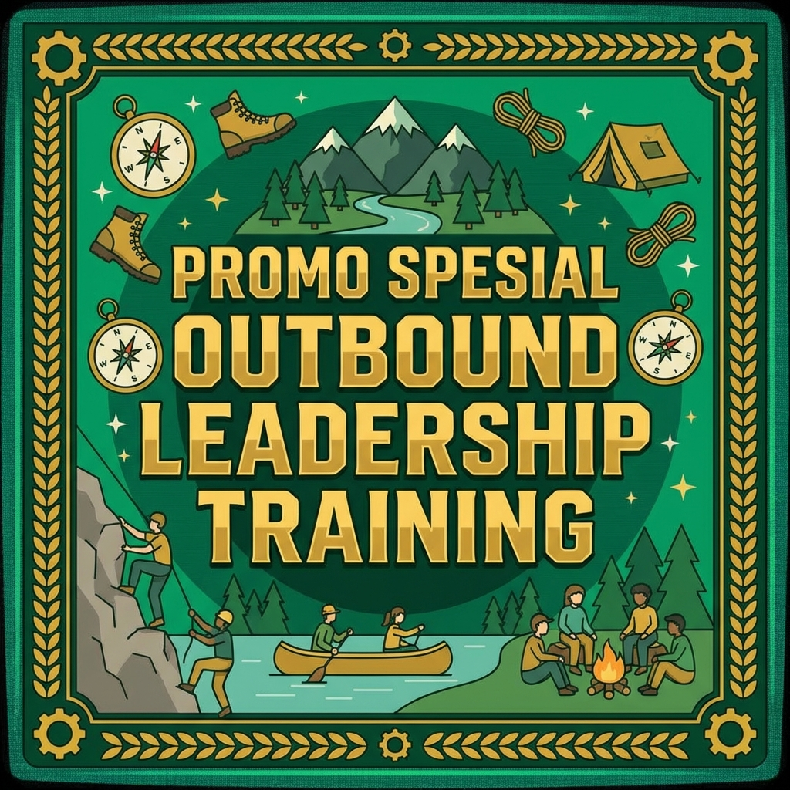

Daftar Isi
Memilih provider outbound yang tepat merupakan langkah krusial yang akan menentukan keberhasilan program pelatihan kepemimpinan atau team building perusahaan Anda. Dengan banyaknya provider outbound yang bermunculan di kawasan Malang Batu, tidak semua menawarkan kualitas yang sama. Beberapa mungkin terlihat menarik dari penawaran harganya, namun kualitas program, keselamatan peserta, dan pengalaman fasilitatornya bisa jauh dari harapan.
Sebagai perusahaan yang menginvestasikan waktu dan anggaran untuk pengembangan SDM, Anda tentu menginginkan program outbound yang benar-benar memberikan dampak positif bagi karyawan. Oleh karena itu, dalam artikel ini kami akan memberikan panduan lengkap tentang bagaimana memilih provider outbound terbaik di Malang Batu agar investasi pelatihan Anda tidak sia-sia.
Mengapa Memilih Provider yang Tepat Sangat Penting?
Provider outbound bukan sekadar event organizer yang mengurus logistik dan acara. Provider outbound yang profesional adalah mitra strategis dalam pengembangan SDM perusahaan Anda. Mereka bertanggung jawab merancang program yang sesuai dengan kebutuhan spesifik perusahaan, memastikan keselamatan seluruh peserta, dan memberikan pengalaman belajar yang bermakna dan berkesan bagi setiap individu yang terlibat.
Pemilihan provider yang salah dapat berakibat fatal. Program yang tidak terstruktur hanya akan menghabiskan anggaran tanpa memberikan manfaat yang terukur. Lebih buruk lagi, jika standar keselamatan diabaikan, kegiatan outbound yang seharusnya menyenangkan bisa berujung kecelakaan yang merugikan perusahaan secara materiil maupun immaterial. Maka dari itu, proses seleksi provider harus dilakukan secara teliti dan komprehensif.
Kriteria Provider Outbound yang Profesional
Pengalaman dan Track Record
Kriteria pertama dan paling fundamental adalah pengalaman provider dalam menyelenggarakan program outbound. Provider yang sudah berpengalaman minimal 5-10 tahun biasanya memiliki pemahaman yang mendalam tentang berbagai kebutuhan klien dan kemampuan menangani berbagai situasi yang muncul di lapangan. Cek portofolio klien mereka dan pastikan mereka pernah menangani perusahaan dengan skala dan kebutuhan yang serupa dengan perusahaan Anda.
Perhatikan juga jenis klien yang pernah mereka tangani. Provider yang sudah dipercaya oleh perusahaan-perusahaan besar, instansi pemerintah, dan lembaga pendidikan ternama biasanya memiliki standar kualitas yang lebih terjamin. Minta mereka menunjukkan testimonial atau referensi dari klien sebelumnya sebagai bukti kredibilitas dan kualitas layanan mereka secara nyata.
Baca Juga
→ Panduan Lengkap Outbound Leadership Training di Batu Malang 2026 → Rekomendasi Lokasi Outbound Terbaik di Batu Malang 2026Kualifikasi Fasilitator dan Trainer
Fasilitator adalah ujung tombak dari sebuah program outbound. Provider yang baik memiliki fasilitator yang bersertifikat, berpengalaman, dan memiliki kemampuan komunikasi yang excellent. Fasilitator harus mampu menciptakan suasana yang mendukung proses pembelajaran, melakukan debriefing yang mendalam, dan menghubungkan pengalaman di lapangan dengan konteks pekerjaan peserta. Tanyakan tentang latar belakang pendidikan dan sertifikasi yang dimiliki oleh tim fasilitator mereka.
Standar Keselamatan yang Tinggi
Keselamatan harus menjadi prioritas utama. Provider profesional memiliki prosedur keselamatan yang jelas dan terdokumentasi, peralatan safety yang berkualitas dan terawat baik, tim medis yang siaga selama kegiatan, serta asuransi kecelakaan untuk seluruh peserta. Jangan ragu untuk meminta melihat SOP keselamatan dan melakukan pengecekan kondisi peralatan sebelum kegiatan dilaksanakan demi keamanan semua pihak.
"Provider outbound terbaik bukan yang menawarkan harga termurah, melainkan yang memberikan value terbaik dengan standar keselamatan tertinggi dan program yang benar-benar berdampak bagi pengembangan peserta."
Pertanyaan Penting yang Harus Anda Ajukan
Sebelum memutuskan bekerja sama dengan sebuah provider outbound, pastikan Anda mengajukan pertanyaan-pertanyaan kritis berikut ini untuk mendapatkan gambaran yang jelas tentang kapabilitas dan profesionalisme mereka:
- Sudah berapa lama berkecimpung di industri outbound? – Pengalaman bertahun-tahun menjadi indikator keahlian dan profesionalisme.
- Siapa saja klien yang pernah ditangani? – Portfolio klien menunjukkan tingkat kepercayaan pasar terhadap mereka.
- Bagaimana proses perancangan program? – Provider profesional melakukan needs assessment sebelum merancang program.
- Apa kualifikasi fasilitator Anda? – Fasilitator bersertifikat memberikan jaminan kualitas delivery program.
- Bagaimana SOP keselamatan yang diterapkan? – Keselamatan harus menjadi prioritas utama tanpa kompromi.
- Apakah ada asuransi untuk peserta? – Perlindungan asuransi menunjukkan tanggung jawab dan profesionalisme provider.
- Apa yang termasuk dan tidak termasuk dalam paket? – Transparansi harga menghindari biaya tersembunyi yang tidak diharapkan.
- Apakah ada backup plan jika cuaca buruk? – Kontingensi menunjukkan kematangan perencanaan dan antisipasi risiko.
- Apakah program bisa dikustomisasi? – Fleksibilitas program penting untuk kebutuhan spesifik perusahaan.
- Bagaimana evaluasi pasca kegiatan? – Laporan evaluasi membantu mengukur keberhasilan program secara terukur.
_11zon.webp)
Red Flags yang Harus Diwaspadai
Selain mencari kriteria positif, Anda juga perlu mewaspadai beberapa tanda bahaya yang menunjukkan bahwa sebuah provider mungkin tidak cukup profesional dan kapabel. Berikut adalah beberapa red flags yang perlu diwaspadai:
- Harga yang terlalu murah – Harga di bawah rata-rata pasar biasanya berarti kompromi pada kualitas program, fasilitas, atau keselamatan.
- Tidak memiliki legalitas usaha – SIUP, NPWP, atau izin operasional yang tidak jelas menunjukkan kurangnya profesionalisme.
- Portofolio tidak jelas – Provider yang enggan menunjukkan rekam jejak mungkin kurang berpengalaman.
- Fasilitator tidak bersertifikat – Tanpa sertifikasi, kualitas program tidak terjamin standarnya.
- Tidak mau site visit – Provider yang menolak survei lokasi bersama klien patut dicurigai motivasinya.
- Tidak ada SOP keselamatan – Ini adalah tanda bahaya serius yang tidak boleh dianggap remeh.
- Komunikasi yang buruk – Respons lambat dan tidak informatif menandakan kurangnya profesionalisme layanan.
Cara Membandingkan Penawaran dari Beberapa Provider
Saat membandingkan penawaran dari beberapa provider outbound, jangan hanya melihat harga. Buatlah matriks perbandingan yang mencakup beberapa aspek penting seperti kualitas program (isi materi, metode, durasi), kualifikasi fasilitator, standar keselamatan, fasilitas yang disediakan, fleksibilitas program, dan layanan tambahan seperti dokumentasi, akomodasi, dan transportasi.
Lakukan site visit ke venue yang ditawarkan oleh masing-masing provider untuk melihat langsung kondisi fasilitas dan kesiapan operasional mereka. Perhatikan juga bagaimana mereka berkomunikasi selama proses negosiasi – provider yang responsif dan proaktif biasanya juga akan memberikan pelayanan yang baik selama pelaksanaan program di lapangan.
_11zon.webp)
Mengapa Gemilang Adventure Menjadi Pilihan Terbaik?
Gemilang Adventure telah berpengalaman lebih dari 10 tahun dalam menyediakan layanan outbound leadership training di kawasan Malang Batu. Dengan lebih dari 500 event yang telah diselenggarakan dan lebih dari 15.000 peserta yang puas, kami telah membuktikan diri sebagai provider outbound yang dapat diandalkan oleh berbagai kalangan.
Keunggulan kami meliputi fasilitator bersertifikat nasional, program yang dapat dikustomisasi sepenuhnya sesuai kebutuhan klien, standar keselamatan yang tinggi dengan peralatan berkualitas dan tim medis profesional, venue-venue pilihan terbaik di kawasan Batu Malang, harga yang kompetitif dengan layanan premium, serta laporan evaluasi komprehensif pasca kegiatan.

Kesimpulan
Memilih provider outbound terbaik di Malang Batu membutuhkan riset dan pertimbangan yang matang. Prioritaskan pengalaman, kualifikasi fasilitator, standar keselamatan, dan kemampuan kustomisasi program di atas faktor harga semata. Dengan memilih provider yang tepat seperti Gemilang Adventure, Anda dapat memastikan bahwa investasi pelatihan kepemimpinan perusahaan memberikan dampak yang maksimal dan berkelanjutan bagi seluruh karyawan.
Konsultasi Gratis Sekarang